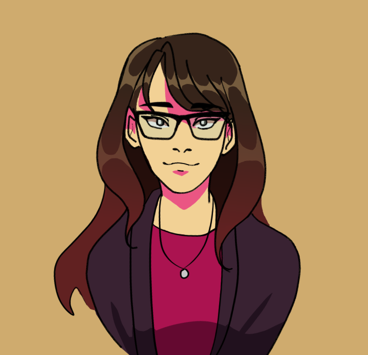

Welcome to my website! I'm
Catherine Luong
UI/UX Designer. Digital Artist.
I tell stories through
Visual Design
Code
Proficient in Clip Studio Paint, Adobe Illustrator, Photoshop, and XD.
Proficient in HTML, CSS, and JS.
Welcome to my website! I'm
Catherine Luong
UI/UX Designer. Digital Artist.
I tell stories through
Proficient in Clip Studio Paint, Adobe Illustrator, Photoshop, and XD.
Proficient in HTML, CSS, and JS.